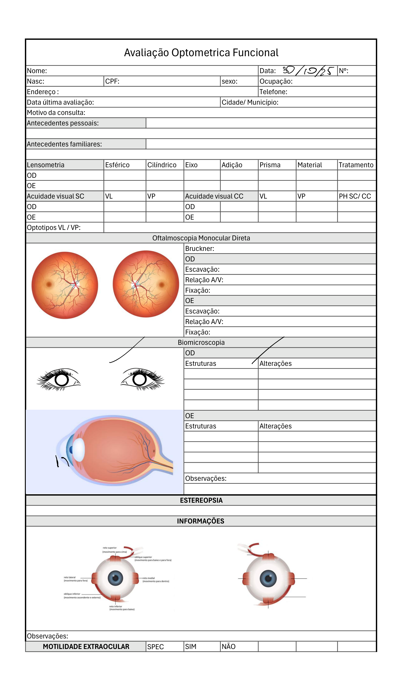
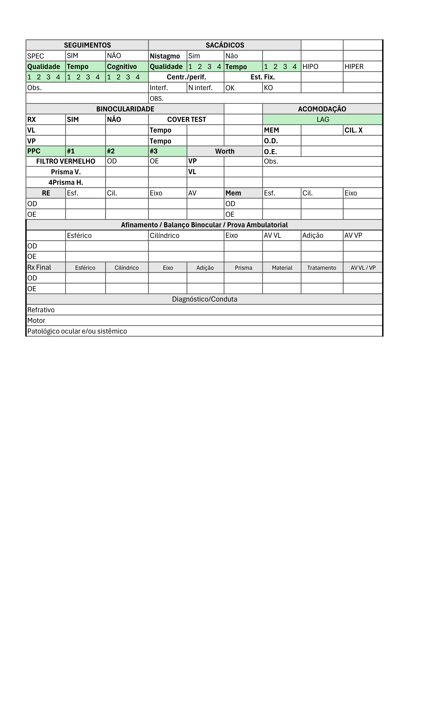

Clínicas
Rascunhos em aberto
Nenhum rascunho salvo.
Nenhum rascunho salvo.
Nenhum rabisco salvo ainda. Você pode criar em "Meus rabiscos".


Desenhe algo que você repete sempre (ex: seta, campo visual, carimbo) e salve como rabisco. Você escolhe quais carregar em cada prontuário novo.